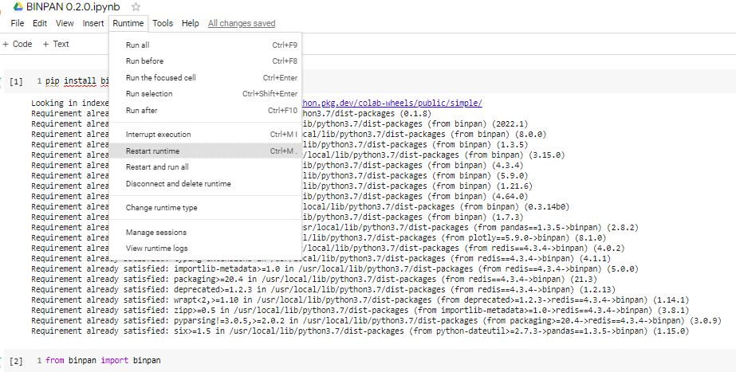

Welcome to BinPan’s documentation!¶
BinPan is a Python wrapper for Binance API. Useful creating objects with many capabilities in data analysis.
BinPan can show plots easily and fetch API requests into the same object. It can also obtain some technical indicators.
The target of this module is to have a fast tool for collecting and handling data from the Binance API easily.
It is intended to be useful in Jupyter Notebooks or even the python console, but it can be used in many other ways.
BinPan manages symbol objects that can do:
get candles with time zone and indexing options.
get trades.
calculate technical indicators.
plot candles, histograms, indicators, etc in a very simple and beautiful way.
check applied fees.
An example of a plot for candles and indicators:

Note
BinPan contains no Binance order method, withdraw method or any dangerous command.
If you decide to add API keys for using some account methods, BinPan will encrypt it in a file, and in memory, but it is better not enabling trading capability on the Binance API key configuration, just for your own peace of mind.
Be careful out there!
Hope you find it useful breaking the market!!!
Documentation¶
Take a look to the basic tutorial. Find it in the Jupyter Notebook file tutorial.ipynb
Python Version and Google Colab¶
Please install in google colab with: !pip install binpan, then push restart runtime button and import library as usual.
Recommended Python version: 3.7
BinPan current version: 0.4.16
Google Colab can throw some errors when pip installing BinPan, but a reset to the runtime should fix it.
{kind=link}
GitHub repo¶
Installation¶
Pypi repository: https://pypi.org/project/binpan/
pip install binpan
Usage¶
There is a tutorial in a Jupyter Notebook file in the github repo.
https://github.com/nand0san/binpan_studio/blob/main/tutorial.ipynb
Importing just like this:
from binpan import binpan
btcusdt = binpan.Symbol(symbol='btcusdt',
tick_interval='15m',
time_zone='Europe/Madrid',
end_time='2021-10-31 03:00:00')
btcusdt.sma(21)
btcusdt.plot()

Greetings¶
Thanks to the pandas_ta people for that great library.
Hope you find it useful breaking the market!!!